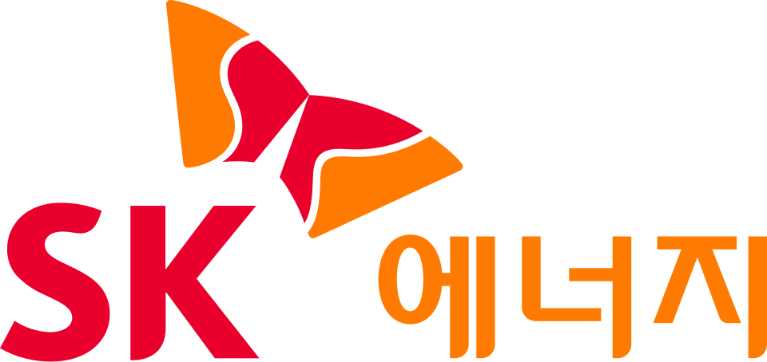

SK에너지 SK Energy
SK에너지(SK Energy)는 SK이노베이션의 정유사업을 담당하는 자회사이다. 본사는 서울특별시에 있다.
최종 업데이트

SK에너지는 어떤 브랜드인가
SK에너지(SK Energy)는 모기업인 SK이노베이션의 정유사업을 담당하는 자회사이다. 이 회사는 SK그룹의 지주회사로부터 분할되어 사업회사로 재출범하였다.
기존의 CIC 체제에서 refinery and marketing CIC를 기초로 설립된 자회사로서 역할을 수행한다. 이 회사는 과거 수출을 통해 국내 2위 수출기업의 공로를 인정받아 수출탑을 수상하였다.
또한 지배구조의 독립성 확보와 운영 효율성을 높이는 노력을 통해 지배구조 우수기업으로 선정되기도 하였다.
SK에너지는 어떻게 시작되고 성장했나
SK에너지는 SK그룹의 지주회사인 SK주식회사로부터 사업회사로 분할되며 출범하였다. 이 회사는 이후 SK인천정유를 흡수합병하였다.
모기업이 SK에너지에서 SK이노베이션으로 사명을 변경하며 SK에너지 등 다수의 자회사를 물적분할하는 과정에서 현재의 형태로 재편되었다. 이 과정에서 기존의 CIC 체제 중 refinery and marketing CIC를 기초로 하여 자회사로 설립되었다.
또한 이후 인천컴플렉스와 무역 사업부문을 분할하여 새로운 자회사들을 출범시켰다.
SK에너지의 브랜드 아이덴티티는 무엇인가
SK에너지는 모기업의 정유사업을 담당하며, 사외이사 비율이 높은 독립적인 이사회 운영을 특징으로 한다. 이 회사는 refinery and marketing CIC를 기반으로 성장하였다.
SK에너지의 대표 제품과 서비스는 무엇인가
SK에너지는 휘발유, 경유, LPG, 등유와 같은 다양한 정유 제품을 제공한다. 또한 엔크린솔룩스 및 에코닉스 등의 제품을 취급한다.
고객 서비스로는 엔크린 보너스카드를 운영한다.
SK에너지는 지금 어떤 상태인가
SK에너지는 독립성이 확보된 이사회를 운영한다. 이사회의 사외이사 비율은 70%에 달하며, 이는 사외이사만으로도 특별결의요건을 충족할 수 있는 수준이다.
이사회 운영절차 정립 및 정례화를 통해 이사회 운영의 효율성을 높이고 있다. 이러한 지배구조 개선의 노력으로 과거 지배구조 최우수기업으로 선정된 이력이 있다.
본사는 서울특별시에 있으며, 울산광역시에도 사업장을 운영한다.
SK에너지 로고는 어떻게 변해왔나
자주 묻는 질문
SK에너지는 어느 나라 브랜드인가요?
SK에너지는 한국의 모빌리티 브랜드입니다.
SK에너지는 언제 설립되었나요?
SK에너지는 1962년 설립되었습니다.
SK에너지의 브랜드 아이덴티티는 무엇인가요?
SK에너지는 모기업의 정유사업을 담당하며, 사외이사 비율이 높은 독립적인 이사회 운영을 특징으로 한다.
SK에너지의 대표 제품은 무엇인가요?
SK에너지는 휘발유, 경유, LPG, 등유와 같은 다양한 정유 제품을 제공한다.
SK에너지는 현재 어떤 상태인가요?
SK에너지는 독립성이 확보된 이사회를 운영한다.
SK에너지의 본사는 어디에 있나요?
SK에너지의 본사는 서울특별시에 있습니다(위키데이터 기준).
SK에너지의 모기업은 어디인가요?
SK에너지의 모기업은 SK이노베이션입니다(위키데이터 기준).
출처와 검증
SK에너지 관련 참고: 공식 웹사이트 · 위키데이터 Q4048790 · 한국어 위키백과. 브랜드명은 한글과 원어를 함께 표기하되 데이터에 없는 표기는 만들지 않습니다. 기원 국가·설립연도는 검수된 정의문에서 확인된 값을 우선하고, 없을 때만 공식 웹사이트 URL이 일치하는 위키데이터 개체의 값을 씁니다. 위키데이터 값은 2026-09-07 기준입니다.